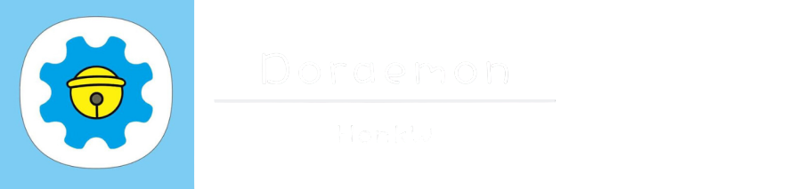
首页
主站
IC技术圈
关于
首页
主站
IC技术圈
关于
IC-Navigation | HonkW
©
IC
集成电路设计及EDA教程
IC
知识 前端 后端 DFT 低功耗 验证 EDA 1rtl检查:LEDA 2仿真:VCS 3逻辑综合:DC 4形式验证:Formality 5布局布线:ICC 6STA:PT 7功耗分析:PTPX 8DRC LVS:Calibre
微信
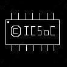
icsoc
IC
i cAN sLEEP oN cHAIR
微信
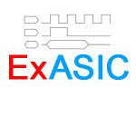
ExASIC
IC Linux与脚本
分享数字集成电路设计中的经验和方法。分享让工作更轻松。
微信
ICGeek
IC
以公益、开源、分享为宗旨，致力于推广IC极客文化，组织大家深入交流IC设计领域知识、经验及方法学，打造IC设计圈的思想国。主要内容包括：极刊、极说、极问等。每周组织主题讨论。你是极客吗？欢迎关注。
微信
集成电路设计那些事儿
IC ADC
集成电路那些事儿，专注于集成电路设计培训，已更新版图设计，未来计划开展ADC设计，PCB设计，Verilog数字设计等视频培训，强调实战，均有一线工程师、博士编写
微信
跟IC君一起学习集成电路
IC 模拟 数字 模数混合
记录一个或者一群集成电路IC工程师的成长轨迹，分享IC设计和验证的技术，包括数字、FPGA、模拟、数模混合、版图等设计及验证的方方面面，或者其它感兴趣的内容。希望大家在技术的路上不断成长！
微信
前端-设计
摸鱼范式
设计
研究生在读学生,分享在数字IC学习过程中的一些收获
分享一些平时学习数字IC与数字验证的一些收获，包括看的书籍，自制的实验，欢迎关注。
微信
数字IC小站
设计&验证
自己的学习笔记，希望共同成长。
记录学习历程，你我共同成长。数字IC小站。
微信
数字积木
设计 FPGA
数字电路设计，FPGA工程开发，技术分享博客，欢迎交流技术相关的问题。
主打数字逻辑设计和FPGA开发，包括数字信号处理，数字图像处理，CPU设计，SOC设计等等，也会发一些其他方面的技术杂文。
微信
数字ICer
设计&验证 FPGA
数字IC、FPGA、Linux、Python、UVM、SV、信号处理等学习笔记，快乐学习，一起进步。
微信
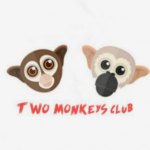
两猿社
设计
分享IC前端、互联网编程知识，算法，项目经验和一些有趣的想法。还有零基础IC和互联网入门项目连载详解，可软可硬，由你决定。
微信
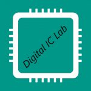
数字芯片实验室
设计&验证 FPGA
前瞻性的眼光,和持之以恒的学习。
微信
StarryHeavensAbove
设计 AI
点滴思考
微信
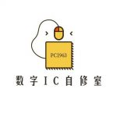
数字IC自修室
设计&验证 FPGA
分享ic设计前端经验，rtl，验证，fpga，综合，sta，偏向synopsys eda工具flow，欢迎关注，一起学习，共同进步！
微信
硅农
设计
总结、记录自己的学习过程，一个硅农的进阶之路！
微信
不忘出芯
设计
少说废话，多做实事。
微信
硅农亚历山大
设计 RISC-V
分享Verilog、处理器设计、RISC-V架构、芯片IC设计、人工智能AI相关的知识信息与经验。
微信
码农的假期
设计 SDC 低功耗
心得分享。
主要是周末或者假期更新，围绕FE/ME/BE衔接部分，分享自己工作或者学习的心得。
微信
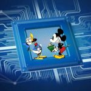
数字IC芯片设计的经验日常
设计
本公众号分享一些IC前端设计的一些经验，适合从事IC设计的初学者，你可以学到：IC前端+Verilog基础+Python基础+用脚本写RTL+工作经验。
微信
小鱼学IC
设计 FPGA
本人数字IC专业，公众号主要分享数字IC，FPGA，嵌入式编程，嵌入式操作系统等相关的个人学习经验。
微信
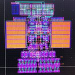
数字芯片设计笔记
设计
数字IC设计基础,适合研究生及初级工程师。
微信
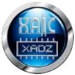
芯光灿烂
设计
西安集成电路设计专业孵化器有限公司与西安东逐电子科技有限公司为了推动和革新西安地区集成电路专业人才的培养工作，联合成立XAICC集成电路技术培训中心。本平台皆在为中心和参加培训的学生提供一个知识交流和信息发布的平台。
微信
FPGA
电子狂人
设计 FPGA
---愿这里有你不曾想到的电子“狂欢曲”---电子狂人在这与你相伴---舞台已为你搭建，只等你的狂欢---【原创技术教程】+【技术资料分享】+【项目干货】等资源为你准备--电子世界的舞台等你狂欢，谢谢关注~~
微信
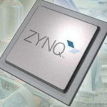
ZYNQ
FPGA
5G，毫米波，行业风口，IC设计，分享最新资讯及ZYNQ学习指南，提供了一个ZYNQ领域的技术交流和信息分享平台。
微信
FPGA LAB
FPGA
用心践行开源思想，主要分享FPGA开发以及逻辑前端设计相关知识以及心得，欢迎广大温柔的看客关注，你们是我带来优质内容的动力，谢谢！
微信
OpenFPGA
FPGA
FPGA新闻、技术、设计思想 ,FPGA深度学习,ZYNQ设计,谢谢大家关注!
分享才是“硬”道理。
微信
PYNQ开源社区
FPGA python
PYNQ开源社区官方消息发布，资料分享，项目交流
PYNQ开源社区是基于PYNQ这一Python和FPGA结合的开源框架交流和全栈学习资料分享的社区。
微信
根究FPGA
FPGA
本公众号致力于学习资料分享，软件算法，FPGA开发资料共享
微信
科学计算technomania
设计 FPGA
在这里我们会分享各种前沿技术、FPGA/Julia/Python/Matlab/C++等编程的技巧，并会有免费的视频教程
微信
网络交换FPGA
FPGA
秉承“工匠”精神，专注网络与交换领域FPGA开发与芯片实现，记录、分享与交流技术上的点点滴滴，与大家共同进步成长。
微信
FPGA自习室
FPGA
FPGA自习室欢迎大家关注，旨在与大家一同学习与分享，一步一个脚印
微信
FPGA开源工作室
FPGA
知识，创新，创艺，FPGA，matlab，opencv，数字图像，数字信号，数字世界。传递有用的知识，传递创艺的作品。FPGA开源工作室欢迎大家的关注。
微信
精进攻城狮
设计 FPGA
从事关于Xilinx / Intel FPGA高速数据采集系统，高速PCB设计，信号/电源完整性，数字IC前端等方面的内容。
Xilinx FPGA ZYNQ & Intel FPGA SOC 的学习、运用和分享；从事领域于高速数据采集系统、Allegro PADS 高速PCB设计信号完整性；外务于 IC 设计前端和验证；以及STM32、ARM嵌入式等工作内容。
微信
瓜大三哥
FPGA
1.立足于FPGA的相关技术； 2.分享有关视频图像处理行业的知识； 3.未来会关注在智能驾驶AI芯片领域(神经网络，机器学习等)； 主要是这三方面的内容以及自己生活中的小感悟
微信
FPGA技术联盟
FPGA
FPGA技术资讯，数字电路设计技巧分享，先进数字设计技术介绍，FPGA常见疑难杂症的解决等
微信
前端-验证
路科验证
验证
专注于数字芯片验证的系统思想和前沿工程领域。
微信
杰瑞IC验证
验证
IC验证干货分享，以幽默拆解晦涩，谈笑中传口诀心法，新手进阶之路的加速器。
微信
阿辉说
验证
IC验证知识分享及个人生活感悟创作。
微信
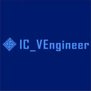
IC验证工程师
验证
IC验证工程师
微信
猴哥验证
验证
UVM分享交流、验证分享交流、python交流、其它ASIC学习分享交流、理财札记、感情小故事与咨询
微信
源芯
验证
万物互联源于芯
微信
DFT
DFT精英
DFT
本公众号重点在于普及DFT（Design For Test）相关知识和经验分析。 将重点讨论长期困扰大多数同行的常见技术难题及其对应的策略与建议。
微信
Jian的ATE学习手记
DFT
ATE debug 案例分析，HW design 经验分享，量产数据分析方法，失效分析，封装仿真……有啥说啥
微信
后端
吾爱IC社区
设计实现
吾爱IC社区（52-ic.com）是一个专业交流和分享数字IC设计与实现技术与经验的IC社区
微信
未来妄想家
EDA 时钟树
未来的未来在哪里？ 过去的过去在哪里？ 除了妄想，我们去哪里？
微信
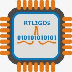
RTL2GDS
设计&验证 FPGA
数字集成电路设计中从RTL到GDS Tapeout整个过程中的知识点系统性分享。包括：IC后端设计(物理设计), 综合, STA, PV, DFT等。也会发表些行业观察类文章！
微信
白山头讲IC
设计实现 PR STA
专注数字IC设计实现，个人成长。
ic设计技术分享与感悟。目前主要是综合、PR、STA。
微信
蓝海微创新
DRC LVS
提供 DRC / LVS/ RCX/ Esd_Latchup Runset开发和QA支持以及Pcell QA的开发与服务的知识和信息.
微信
陌上风骑驴看IC
后端 综合 STA
闲情偶寄，谈天说地，拔草锄地
微信
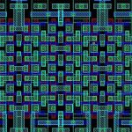
IC—layout
Layout
致力于打造国内ic layout交流新平台。 ic layout新“姿势”，每周更不停。 行业资讯早发现，八卦多又多。
微信
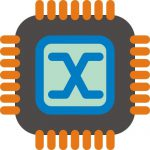
艾思后端实现
设计实现
IC芯片设计、实现等相关主题
微信
数字后端IC芯片设计
设计实现
分享芯片数字后端设计中经验和方法。以及芯片设计软件的使用技巧。偏向后端设计，IC后端设计，cadence软件。欢迎交流，有问必答，一起进步。关注我就可以啦^_^
微信
数字后端设计及CAD流程
设计实现 PR
分介绍数字后端设计流程，包括 DC ICC EDI PTSI CALIBRE REDHAWK等工具的使用，以及其他脚本Makefile SED AWK PYTHON PERL等使用方法，解决后端设计中碰到的各种问题。欢迎提问，一起学习。
微信
模拟
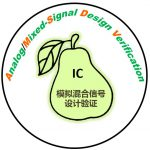
模拟混合信号设计验证
模拟设计 ADC
有技术，有温度。 宣传集成电路知识，尤其是模拟、混合信号电路设计验证； 提高大家集成电路设计验证认知和技能 。
微信
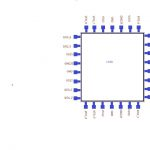
芯灵动
模拟设计
追逐 IC前沿技术，挑战芯的问题，保持一颗执着的“芯”，迈向“芯台阶”
微信
芯启示
模拟设计
可能算得上专业分享电路的，非专业交流人生启示的万人兴趣小圈子
号主模拟IC博士搬砖狗，芯片重度爱好者，喜深度思考，闲暇涉猎经融史哲，常怀敬畏，获益匪浅。于模数转换器，相信精度的高低与带宽的大小同等重要。于知识，深信理解的层次同推广的能力同等重要。于人生，坚信思维的深度和眼界的宽度同等重要。重点为IC技术分享交流，以及人生所思所感。给大家以启示，为此号存在之第一要义。
微信
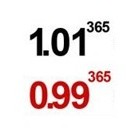
不忘初心的模拟小牛牛
模拟设计
学习、总结、分享模拟电路及相关内容的心得体会，在这里，一起成长，为成为大牛，加油努力。
微信
吴小喵的IC设计笔记
模拟设计
这里也许会有常见的公式推导、临时抓一篇paper读一读，Maybe还会有一些小软文。但我愿意继续一点一滴的积累学习，也希望这样子小小的知识能够感染到你，一起学习IC这件^小^事。吴小^喵^
微信
杂谈
故事v历史
Chisel jchdl
一·二·三·万物：历史中的故事，故事中的历史
微信
EDA物理设计技术
EDA
聊聊IC物理设计、工具使用、硅工技术和人生。
微信
32768Hz
脚本 python perl
本公众号用于记录数字IC菜鸟的成长轨迹。愿和你在自学的路上一起进步~
微信
不知道
MiscLogic
不知道就是不知道
MiscLogic：一个基于Pyhton的Verilog代码生成器
微信
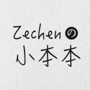
Zechen的小本本
Linux与脚本
领域包括了“面向 Python 基础，进阶和有趣应用」的一站式技术分享”，挖掘学习者在学习当中遇到的各类问题并分享经验，关注实用技能和有趣新闻。
微信
关于
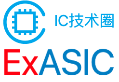
本站内容
友情链接:
超越极致
/
IC技术圈
JaneR
💕
HonkW